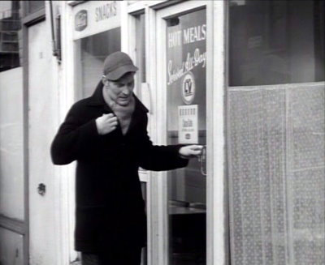
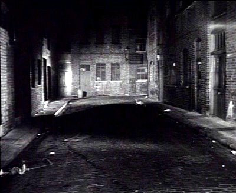
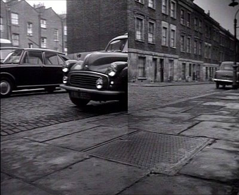
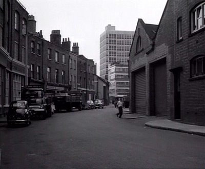

|
|
HELP FIND THE FOLLOWING LOCATIONS
PAGE 18
GIDEONS
WAY: Gang War (Quentin Lawrence - January/February
1965)
Unknown
1 – One of the
policemen watching the Romano’s flat leaves a shop and notices Waldo
leaving
the building with Lollo.

Unknown 2 – Blake goes for a meeting with Romano at Weller’s Warehouse.

Unknown 3 – Ronald Lacey (Jerry Blake), Frank Romano (Ray Brooks) and Lollo Romano (Jane Merrow) leave Weller’s Warehouse via a coal hole and leave in a waiting Morris car.

GIDEON’S
WAY:
The White Rat (Roy
Baker, August 1964)
Back Church Street, London E1 – The West End
Fur Co. – Mickey Keston
(Ray McAnally)
is robbing the factory
with the help of Yob (David Gregory), After knocking out the watchman
they make
their escape in a van.
(Identified by Andrew Chilcott, July 2016.


The warehouse from which the van is emerging belonged to Charles Kinloch & Co in Back Church Street, London E1
We see the van has turned right and is driving southwards along Back Church Street, London E1. It is about to pass the junction with Ellen Street to its left and Hooper Street to its right. There has been redevelopment but the warehouses are still there today.

Cinnamon Street looking towards Wapping Lane, London E1 – A policeman comes running when he hears that shots that have been fire by Mickey.
(Identified by Geoff Dodd, June 2022)

Think you know a spot? Need a bigger image? Email me.
< Previous | Index | Avengerland | Next >
Copyright © 2022 Anthony R. McKay